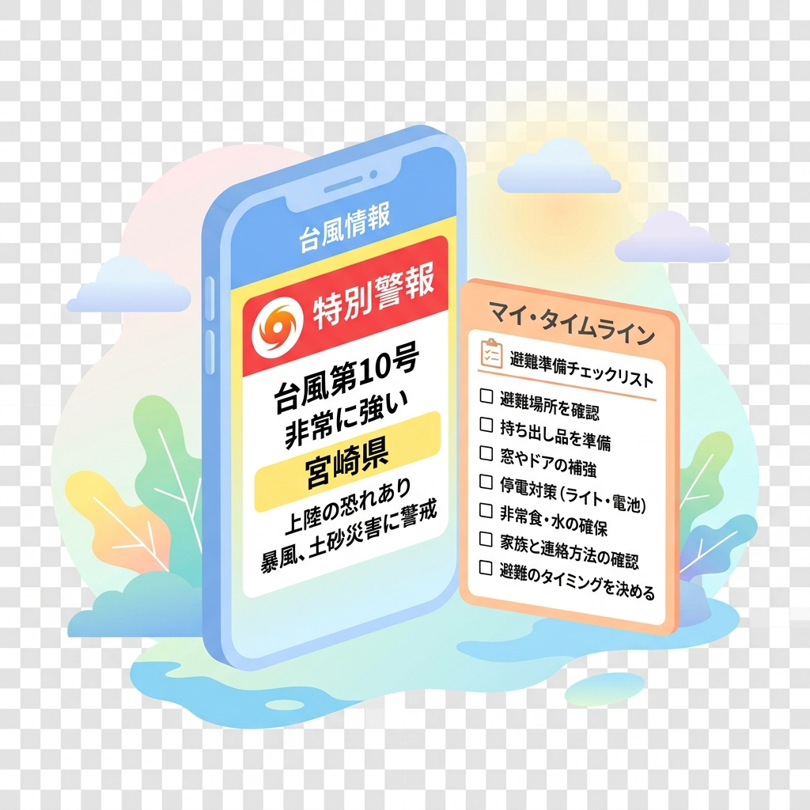

【2026年最新】台風・大雨を生き抜くマイ・タイムラインの作り方と命を守る警戒レベルの読み解き方

こんにちは、防災オプチャの管理人です！
毎年夏から秋にかけて発生する大型の台風や、ゲリラ豪雨。ニュースで「避難指示が発令されました」とか「警戒レベル4」という言葉を聞いてから、「え、今から避難するの？どこに？何を持って？」と大慌てした経験はありませんか？
台風や豪雨の素晴らしい点（と言っては語弊がありますが）は、地震と違って「数日前から予測できる」ということです。つまり、事前に準備をしておくことで、100%安全に逃げ切ることができる災害なのです。
今回は、私たちのオプチャでもメンバーに強く作成を勧めている、自分専用の超具体的な避難スケジュール表「マイ・タイムライン」の簡単な作り方と、テレビで流れる「警戒レベル」の本当に正しい意味について、経験ベースでわかりやすく解説します！
そもそも「マイ・タイムライン」って何？
なんだかカタカナで難しそうですが、要するに「台風が近づいてきたら、私は〇日前にこれをやって、〇時間前にここに逃げる！」という自分だけのスケジュール帳です。
避難のタイミングは、住んでいる場所（アパートの3階なのか、川の近くの一軒家なのか）や、家族構成（赤ちゃんがいる、お年寄りがいる、ペットがいる等）によって全員バラバラです。ネットのマニュアル通りではなく、「自分ごと」として時間を巻き戻して行動を決めておくのが、タイムライン防災の真髄です。
命を分ける！「警戒レベル」と取るべきアクション
大雨のとき、よくニュースで「警戒レベル〇が発表されました」と流れますよね。これ、なんとなく数字が大きくなったらヤバい…と思っている方が多いですが、レベル5が出てから動くのでは100%遅すぎます。レベルごとの「本当に取るべき行動」を表にまとめました。
| 警戒レベル | 国・自治体の発表情報 | あなたが絶対に取るべきリアルな行動 |
|---|---|---|
| レベル3 | 高齢者等避難 | お年寄り、乳幼児連れ、ペットがいる家庭はこの段階で全員避難完了！一般の人も、夜間に台風が最接近するならここで早めに避難所へ。 |
| レベル4 | 避難指示 | 全員、ただちに危険な場所から退避！ 避難所への移動が危ない場合は、頑丈な建物の上の階や、斜面と反対側の部屋（垂直避難）へ。 |
| レベル5 | 緊急安全確保 | すでに周囲で災害が発生している最悪の状況。外を歩いて逃げるのは死を意味します。命を守るため、その場でできる限界の行動（ベッドの上に上がる等）を取る最終段階。 |
私たちのオプチャのルールでもお伝えしていますが、デマや誤解を防ぐために繰り返します。自治体が発表する「レベル5（緊急安全確保）」は、すでに土砂崩れや氾濫が起きていて「避難所に行くことすら不可能な状態」です。「レベル5が出たから避難しなきゃ！」は手遅れなので、必ずレベル3〜4の明るいうちに動きを終えるようにマイ・タイムラインを組んでください！
【簡単3ステップ】マイ・タイムラインの作り方
それでは、ノートとペンを用意して、以下のステップであなた自身のタイムラインを書き出してみましょう！
📝 マイ・タイムライン作成ステップ
- 自宅の危険度（ハザードマップ）を知る： 自治体の「ハザードマップ」を検索し、自分の家が「洪水で浸水するエリアか？」「土砂崩れの危険があるか？」を確認します。もし3階以上のマンションで、土砂災害エリアでもなければ、「自宅で安全に籠城する（在宅避難）」という選択肢がタイムラインのゴールになります。川の近くや木造一軒家なら「安全なホテルや避難所へ行く」がゴールです。
- 避難先とルートを決める： 「〇〇小学校」「近くの頑丈なホテル」「実家」など、具体的な避難先を決めます。そこまでの安全なルート（冠水しやすいアンダーパスなどを避ける）も平時にGoogleマップでチェックしておきます。
- 時間軸にアクションをはめ込む： 台風の上陸（最接近）を「Xデー」として、時間を逆算してやることを書き出します。
【記入例】我が家の台風タイムライン（最接近を「0時間前」とする）
- 3日前（台風発生・ニュース確認）： 情報を意識して収集し始める。スマホの「デジタル備蓄（オフラインマップ保存）」を完了させる。
- 1日前（風が強くなる前）： ベランダの植木鉢や物干し竿を室内に取り込む。お風呂に水を張り、100均で買った伸縮ランタンなどのライト類を枕元に配置。買い出しを済ませる。
- 半日前（雨風が本格化する前）： 避難が必要な場合は、リュックを持って移動開始。ペットの同行避難や車中泊組もこの段階で配置に就く。
- 最接近時（ピーク）： 自宅または避難所の安全な部屋で、外に出ず静かに台風が通り過ぎるのを待つ。
まとめ：書き出すだけで、パニックは8割防げる
人間は、想定していない事態が起きると「まさか自分が」「まだ大丈夫」と思い込んで動けなくなります（正常性バイアス）。でも、紙に一枚「タイムライン」を書いて冷蔵庫に貼っておくだけで、いざ台風が来た時にロボットのように迷わず動けるようになります。
今度の週末にでも、ご家族で「うちは何時間前にどこに逃げる？」とおしゃべりしながら作ってみてください。私たちのオプチャでは、台風接近時には副官から公式気象データとタイムラインに沿った注意喚起をピン留めアナウンスしますので、ぜひ参考にしてくださいね！